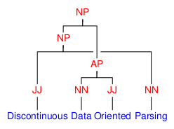

Discontinuous Data-Oriented Parsing: disco-dop¶
The aim of this project is to parse discontinuous constituents in natural language using Data-Oriented Parsing (DOP), with a focus on global world domination. The grammar is extracted from a treebank of sentences annotated with (discontinuous) phrase-structure trees. Concretely, this project provides a statistical constituency parser with support for discontinuous constituents and Data-Oriented Parsing. Discontinuous constituents are supported through the grammar formalism Linear Context-Free Rewriting System (LCFRS), which is a generalization of Probabilistic Context-Free Grammar (PCFG). Data-Oriented Parsing allows re-use of arbitrary-sized fragments from previously seen sentences using Tree-Substitution Grammar (TSG).